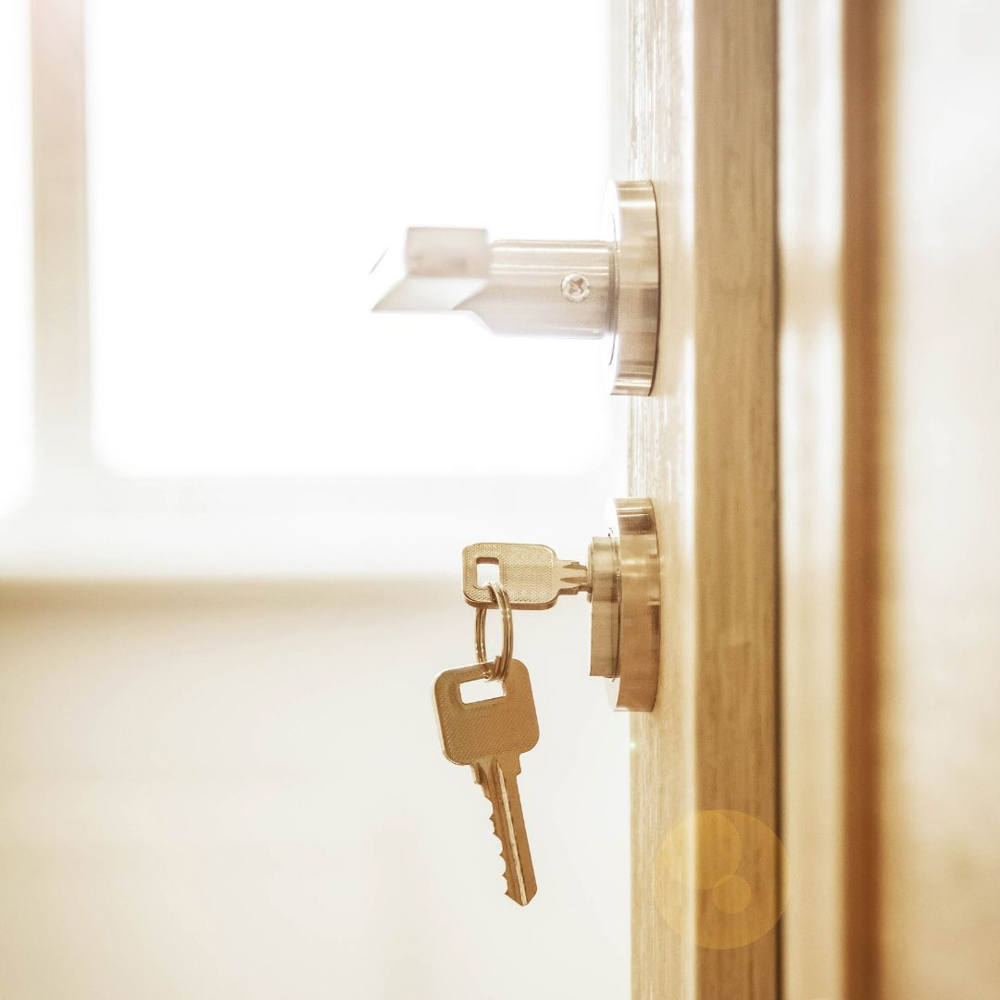

Get A Free Quote Now!
Thank you for contacting SPL Security Solutions.
We will be in touch soon.

Mobile Locksmith Services Molendinar
At SPL Security Solutions, we deliver professional 24/7 mobile locksmith services throughout Molendinar, ensuring you have expert assistance whenever and wherever you need it. Whether you’re locked out of your home, need a car key replacement or want to upgrade your security system, our mobile team provides fast, reliable solutions tailored to your situation.
Equipped with advanced tools and a wide range of lock components, we resolve most issues on-site, minimising inconvenience and restoring your security promptly. From residential lock installations to commercial access control and automotive emergencies, our team is here to provide peace of mind.
Call us on (07) 5588 8111 for efficient and dependable locksmith services in Molendinar.
Our residential locksmith services in Molendinar ensure your home remains secure and accessible. Whether you need lock repairs, emergency assistance or smart lock installations, we provide solutions that prioritise your family’s safety.
Our commercial locksmith services in Molendinar are designed to meet the security needs of businesses. From high-security lock installations to access control systems and emergency repairs, we protect your assets and streamline operations.
Our automotive locksmith services in Molendinar provide fast and efficient solutions for car lockouts, lost keys and ignition repairs. We also specialise in programming transponder keys and delivering quick replacements to keep you moving.
Our restricted key systems in Molendinar offer advanced security by preventing unauthorised duplication. These systems are ideal for both residential and commercial properties requiring higher access control.
We provide comprehensive safe services in Molendinar, including unlocking, maintenance and combination changes. Our safes are designed to protect your valuables from theft, fire and water damage.
Our security systems in Molendinar integrate CCTV, alarms and access control to deliver complete protection. We create customised setups that meet the unique needs of homes and businesses.
Our lock hardware services in Molendinar feature high-quality options, from tamper-resistant deadbolts to modern smart locks. We ensure your locks are built to last and enhance your property’s safety.
Upgrade your doors with premium door hardware in Molendinar. Our selection includes sturdy hinges, elegant handles and innovative sliding mechanisms designed to improve both security and usability.
Our expertly sourced architectural door hardware includes fire-resistant options, efficient closers, and decorative handles, enhancing both contemporary and classic spaces in Molendinar.
Emergency Locksmith Services Molendinar
Security emergencies are unpredictable, but we’re here to help whenever they arise.
- Locked out of your property
Getting locked out of your home, office, or vehicle can be stressful and inconvenient. We provide swift, non-destructive access to get you back inside. - Lost or stolen keys
Misplaced or stolen keys create security risks for your property. We offer rekeying or lock replacement services to safeguard your space. - Damaged locks
Jammed or broken locks can compromise your safety and functionality. We provide immediate repairs or replacements to restore security. - Malfunctioning smart locks
Electronic locks can fail without warning, leaving you stranded or vulnerable. Our experts can diagnose and fix these issues to ensure your property remains secure. - Safe access issues
Whether it’s a forgotten combination or a jammed lock, we offer professional safe services to restore access without damage.

Contact Details
24/7 Emergency Locksmiths or Security Tech


Trading Hours
Retail Shop

Frequently Asked Questions
-
What should I do if I lose all the keys to my house?
If you lose all your keys, consider rekeying or replacing your locks to maintain security. A locksmith can provide a new set of keys and ensure your property remains protected.
-
Can a locksmith fix a jammed car ignition?
Yes, a locksmith can repair or replace a jammed ignition. This service includes diagnosing the issue and providing a quick resolution to get your vehicle back in working order.
Locksmith & Security Solutions Gold Coast, Brisbane & Northern NSW